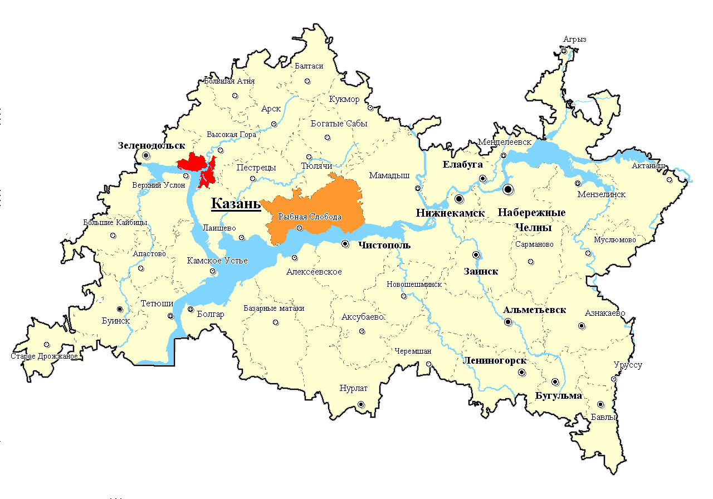

Протяжённость города с севера на юг — 29 км, с запада на восток — 31 км. Город в западной, центральной и юго-западной части выходит на Куйбышевское водохранилище на протяжении около 15 км. В Казани имеется один мост через Волгу — у крайней западной границы территории города. Река Казанка протекает с северо-востока на запад через середину города и делит Казань на две соизмеримые по территории части — историческую к югу от реки и более новую заречную к северу. Две части города связаны пятью дамбами и мостами, а также линией метрополитена.
Характер рельефа города — равнинно-холмистый. В центральной части города есть низменные равнины Забулачье, Предкабанье, Закабанье, возвышенная равнина Арское поле и выделяются отдельные холмы — Кремлёвский (Кремлёвско-Университетский), Марусовский, Федосеевский, Первая Гора, Вторая Гора, Аметьево, Ново-Татарская Слобода, и другие. В направлении на юго-восток и восток территория города в целом плавно повышается, и крупные жилые массивы Горки, Азино, а также Нагорный, Дербышки расположены на изовысотах 20-40 метров и выше, чем часть исторического центра, юго-западные районы и Заречье. В Заречье выделяется Зилантова гора, а также холмы посёлков на севере города. В разных местах имеются овраги и подобные им локальные вытянутые понижения местности.
Территория города характеризуется очень значительной долей водных поверхностей. Полоса части акватории Волги шириной более 2 км (вдоль западной границы города), а также преимущественно мелководные окончание и новое устье реки Казанка шириной около 1 км (полностью внутри территории города) сформировались при появлении Куйбышевского водохранилища в середине XX века вместо во много раз более узких природных рек. Также в число водных поверхностей города входят: начинающаяся в центре города и идущая на юг система из трёх крупных озёр Кабан — Нижний (Ближний), Средний, Верхний (Дальний), меньшие озёра на периферии Лебяжье, Глубокое, Голубые и т. д., малые водоёмы в разных местах (в том числе необычные посреди кварталов многоэтажного массива Новое Савиново), рукотворные озёра Изумрудное, Комсомольское, канал Булак в центре города, небольшие реки Нокса, Сухая Река, и другие на периферии. От бывшего устья реки Казанка осталась небольшая старица. В акватории Волги имеются небольшие острова Маркиз и другие. В юго-восточной и восточной части Заречья у реки Казанка есть заболоченные незначительные нестабильные островки и заливные пойменные луга. Вдоль берегов Волги и Казанки в ряде мест имеются дамбы гидрозащиты. Уровни Волги и Казанки в городе временами колеблются до нескольких метров в зависимости от времени года и некоторых отдельных лет в целом и очень сильно зависят от деятельности Волжской ГЭС (фактически определяются ею). В частности, летом 2010 года рекордное понижение уровня воды водохранилища от средних за полвека значений сильно обнажило берега Волги и временно сузило окончание и устье Казанки практически до природных ширин.
